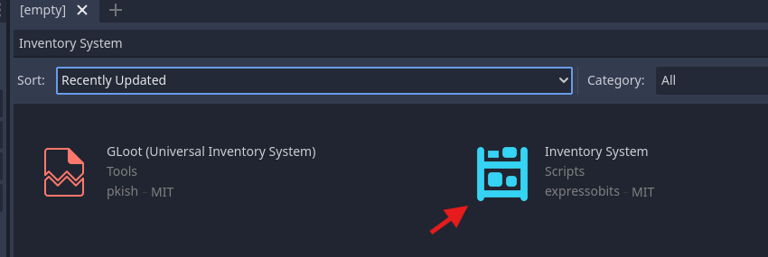
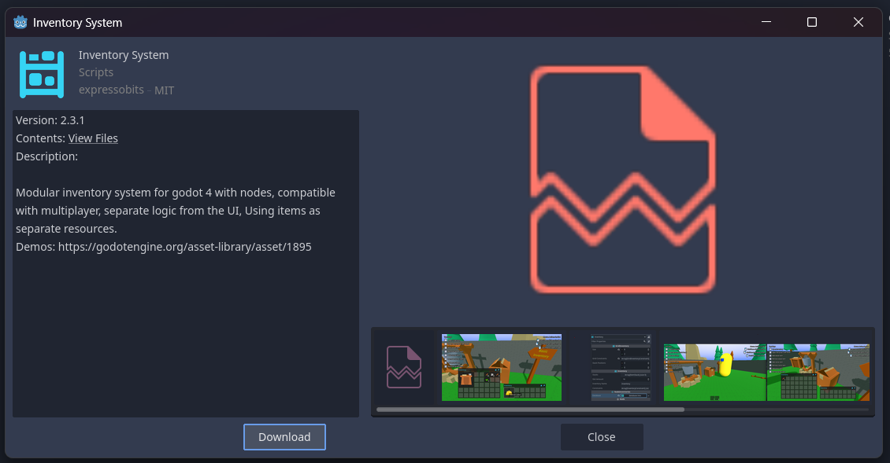

Installation and Setup
Installing
There are two ways to install the plugin, via godot asset lib and via submodule
A. Installing via Godot Asset Lib
Enter in Asset Lib on top view of Godot:

Search for the “Inventory System” plugin
Select Download
Select Install for add addon in your project.

B. Install via Git Modules
Open a terminal in your project folder and type command for add submodule
git submodule add https://github.com/expressobits/inventory-system.git addons/inventory-system
Type command for start submodule
git submodule update --init --recursive
Active Plugin after install
After installing, you may need to restart godot and then activate it in ProjectSettings